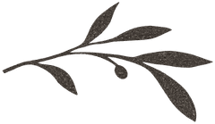
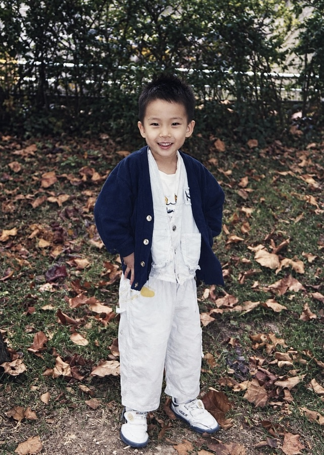
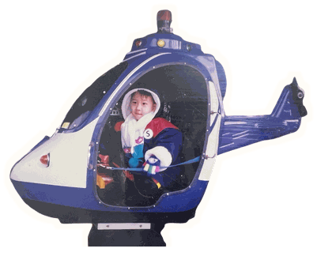
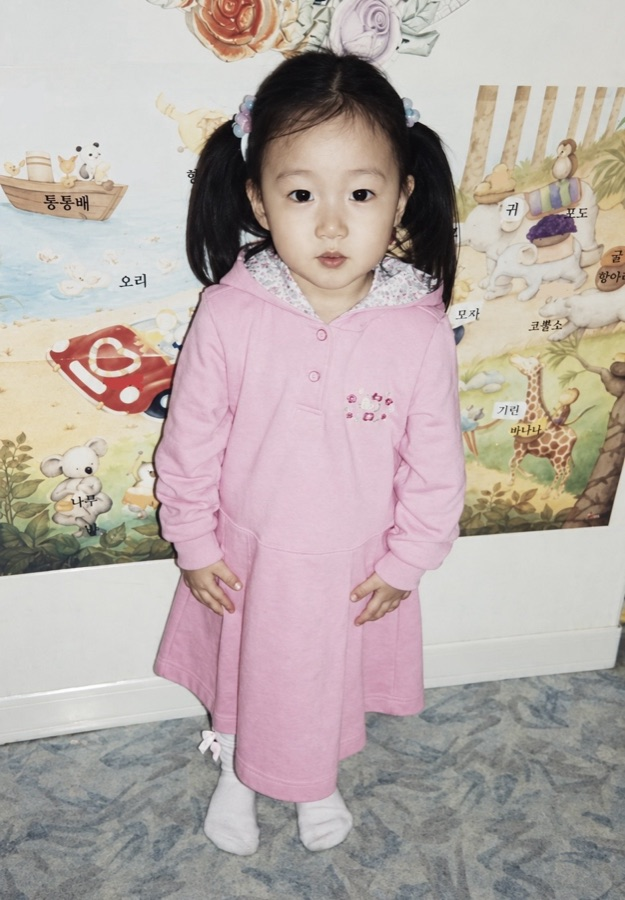
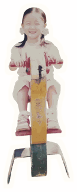
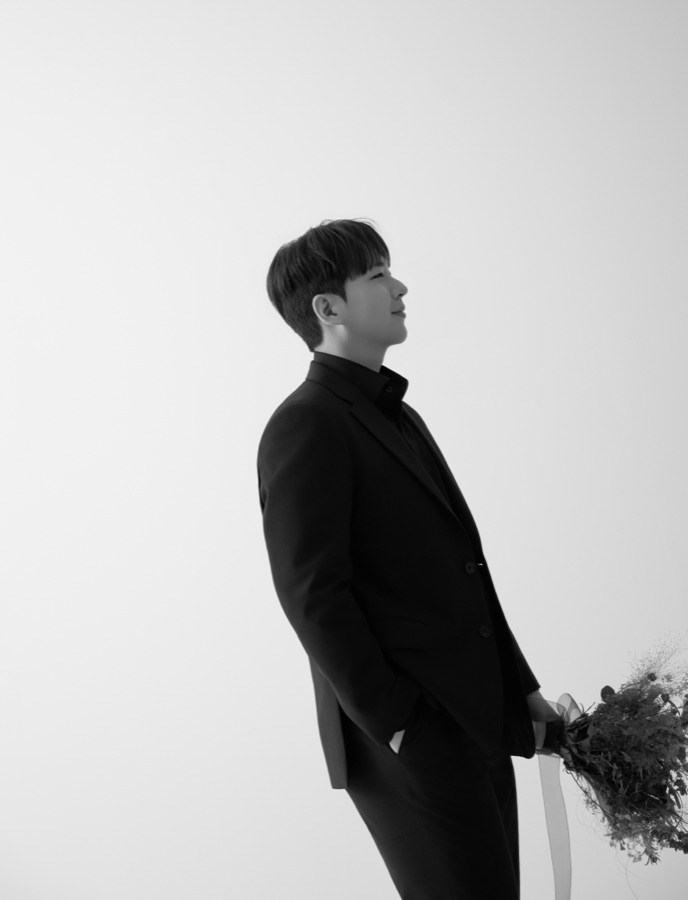
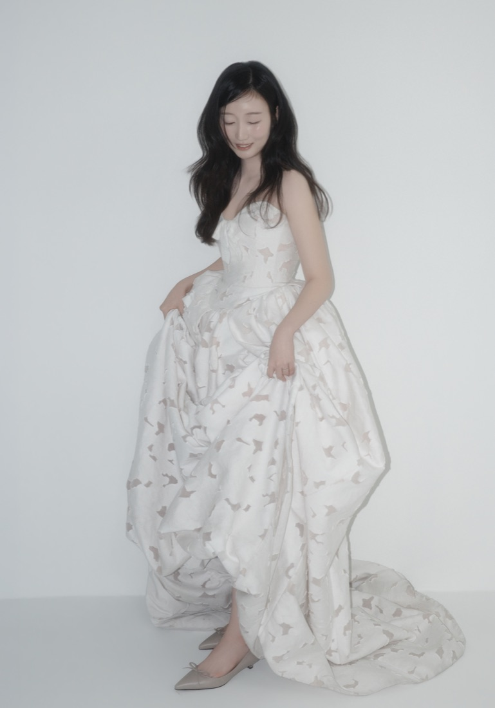

우리의 삶을 함께 써 주신 당신께

안녕하세요. 10월의 신랑, 이산하
신부 송시야입니다!
잠깐 저희에 대해 얘기해 드릴게요!

제 신랑은 어릴 때 시를 써서 상도 받던
문학소년이었대요. 무협지를 좋아해서 작가를
꿈꾸기도 했고요. 그랬던 아이는 커서
냉철하고 이성적인 개발자가 됐어요!


제 신부는 다섯 살 때 빗소리가 좋다며 혼자
우산 쓰고 동네를 걷던 아이였대요.

글 쓰는 걸 좋아해서 수첩과 펜을 늘 들고 다녔고요. 그랬던 아이는 커서 상황을 분석하고 길을 찾는 사업전략가가 됐어요. 여전히 꿈을 꾸는 사람이고요.
저희는 같은 회사에서 만났어요!

신랑은 새벽에 퇴근하더라도 다음 날 꼭 정장에 머리까지 하고 나왔어요. 처음엔 차가워 보이는 데다 저와 너무 다른 사람 같아서 거리를 뒀는데, 알면 알수록 보석 같은 사람이더라고요!
'이 사람 놓치면 안 되겠다, 남 주기 너무 아깝다! 아니, 싫다!' 싶어서 콱 잡았죠.

사실 저는 그때 연애 생각이 없었어요. 당분간 일에만 집중하자는 마음이었죠. 그런데 이 사람이 자꾸 제 주변을 맴돌더라고요.
그러다 문득, 쉬는 날에도 시야를 떠올리는 저를 발견했어요. 아, 내가 설레고 있구나.
어른이 되고는 꿈을 꾸지 않던 제가, 이 사람을 만나 다시 꿈꾸게 됐어요. 사랑도 많아졌고요.
마음이 여렸던 저는 이 사람 덕분에 많이 단단해졌어요! 누군가에게 기대는 법도 배웠고요!
MBTI 궁합이 '파국'으로 나올 만큼 성향이 다르지만, 달랐기에 서로의 빈틈을 채우고, 장점은 더 빛낼 수 있었어요.
P.S. 저희가 결혼을 언제 결심했냐면요!
사진첩
하객 안내
신부대기실은 6시 10분경 정리될 예정입니다. 신부와 사진을 남기고 싶으신 분들께서는 참고해 주시면 감사하겠습니다.
축하 화환은 정중히 사양합니다. 오셔서 축복해 주시는 것만으로 충분히 감사합니다.
마음 전하는 곳
참석이 어려우신 분들을 위해 안내드립니다.